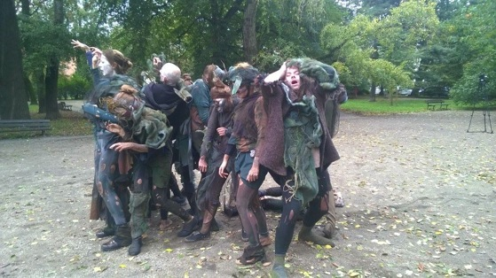

Choreografia: praca zbiorowa
Kostiumy: Joanna Biegańska
Muzyka: India Czajkowska
Muzyka: India Czajkowska
Kostiumy i scenografia: Joanna Biegańska


Koncepcja i organizacja wydarzenia: Wojtek Matejko, Anna Juniewicz
Foto: Maciej Biegański
Protestaniec
(udział w zbiorowym butoh-performansie pod Ministerstwem Środowiska w ramach protestu przeciwko wycince drzew i polityce rządu ws Puszczy Białowieskiej)
2017
2017 - Protestaniec. Butoh - performance “Las rośnie długo, znika szybko. Protestaniec pod ministerstwem” - protest artystyczny. Energia Puszczy pod Ministerstwem Środowiska! W reakcji na wycinkę prowadzoną w Puszczy Białowieskiej, grupa tancerzy wykona performance butoh.
Butoh to kontrkulturowa forma tańca, która narodziła się w Japonii w latach 50. XX wieku. “Butoh nie jest religijne ani niereligijne. Nie jest humanistyczne. Butoh nie wyznaje niczego: ani kultu osobowości, ani tej, czy tamtej ideologii, żadnego “izmu”. Butoh nie wyznaje. Butoh nalega bez przerwy: pozwólcie nam dotrzeć do prawdy. Nic innego, nic poza prawdą... Świadomość domaga się prawdy, by uwolnić się od choroby” (M. Holborn i E. Hoffman, “Butoh: Dance of the Dark Soul”)
Tancerze
Anita Zdrojewska, Anna Juniewicz, Joanna Biegańska, Katerina Andriejewna, Jan Lubicz Przyłuski, Małgosia Szadkowska, Maria Sokołowska, Marta Olszewska, Magdalena Wangrat, Regina Masuhr, Tomasz Domański, Tomek Krynicki, Wojtek Matejko